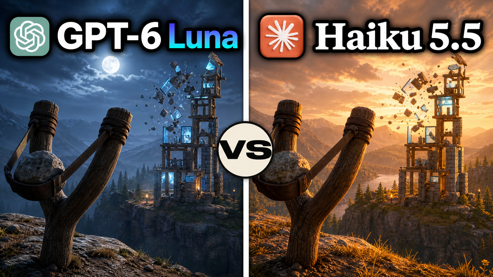

Haiku - младшая модель Claude под быструю массовую работу. Новая версия в среднем на 75% дешевле прошлой, а на коротких задачах - в десять раз. Первый Haiku, у которого можно выбрать, сколько он думает.
Открываешь Claude Code в пустой папке
Пишешь /model haiku
Уровень усилия ставишь high - такой же, как потом у Luna
Команда · Claude Code
/model haiku
02
Включаем GPT-6 Luna
Luna - маленькая модель OpenAI, на ней теперь работает GPT-6 у бесплатных пользователей ChatGPT. По цене за токен она такая же, как Haiku.
Открываешь терминал в другой пустой папке
Запускаешь Codex сразу с Luna командой ниже
Усилие тоже high - иначе сравнение нечестное
Команда · терминал
codex --model gpt-6-luna
Если Codex раньше входил по API-ключу, он будет списывать деньги с ключа. Чтобы Luna шла в лимит подписки, перед тестом войди заново командой codex login.
03
Одна задача обеим
Тот же промпт, что в видео: Angry Birds с настоящей физикой. Вставляешь в обе модели без изменений и засекаешь время у каждой.
Копируешь промпт целиком
Вставляешь в Claude Code с Haiku и в Codex с Luna
Ждёшь ссылку на localhost и стреляешь в обеих играх
Промпт 1 · Angry Birds для обеих моделей
Это публичный тест для ютуба: одна и та же задача двум нейросетям. Сделай максимум, на что способен.
Задача: игра в духе Angry Birds с настоящей физикой.
- рогатка, которую натягиваешь мышью, птица летит по дуге
- три уровня с башнями из дерева, камня и стекла, свиньи внутри
- блоки рушатся по физике, свиньи погибают от удара
- счёт, звёзды за уровень, звуки
- яркая мультяшная графика
Используй любые библиотеки. Собери проект, запусти на localhost, открой в браузере и проверь сам: птица летит, башни рушатся, в консоли нет ошибок. Нашёл проблему - исправь. В конце дай ссылку.
Luna у меняоколо 20 минут, птицы, уровни, физика осколков - всё работает
Haiku у меня500 тысяч токенов и около 15% лимита, физика проработана, но игра выглядит заметно слабее
Всё с одного промпта, без доработок. У тебя результат может выйти другим - модели каждый раз собирают по-разному.

Один промптHaiku против Luna
04
Opus думает, Haiku делает
Haiku хорош не как главная модель, а как рабочие руки рядом с большой. В видео - сетап из X: Sonnet пишет код, Haiku роем ищет по проекту и документации, Opus сидит на подхвате и включается только в ключевые моменты. Лимит Opus не уходит на рутину.
Полный сетап и промпт - у автора в посте: @mirku21
Ориентир по лимиту: час работы на Haiku у человека съел 1% пятичасового лимита - пост
05
Кредиты на API для Max
Если сидишь на тарифе Max, Anthropic теперь каждый месяц дают кредиты на API. Работают на любой модели, в своём коде и в сторонних программах.